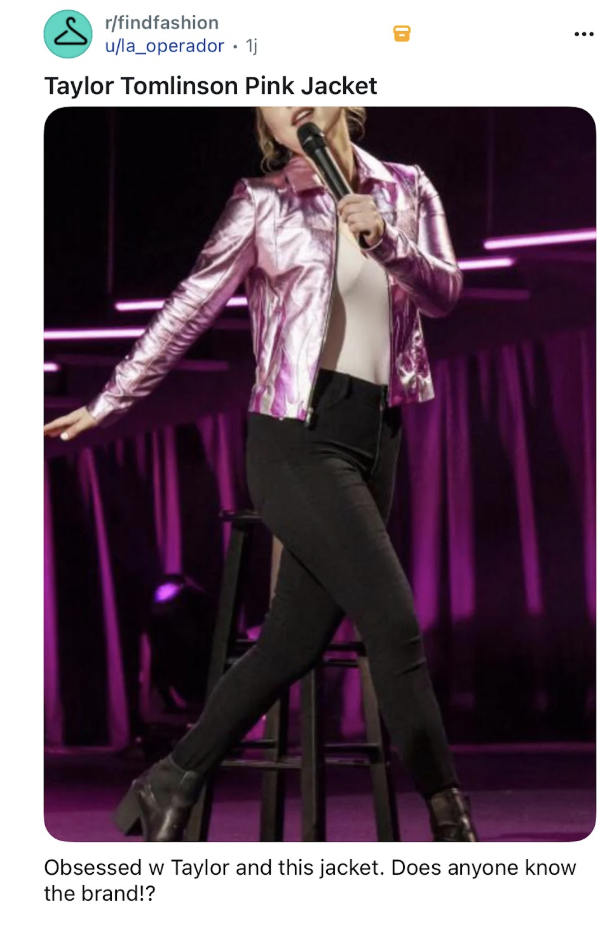

Press Pause - eine Metallic Lederjacke mit Flammen!!!
Ich hatte vor ein paar Monaten so einen krassen Fashion-Moment, dass ich auf Stopp drücken musste, um zu googlen. Ja, ok, dass ich auf Stopp drücke, weil mein Gehirn es nicht aushält, Dinge gleich zu googlen, wenn ein Gedanke einschießt; und ja ok, ich google wirklich noch. The millennial in me is strong.
Ich habe jedenfalls nicht erwartet, einen Fashion Moment während einer Comedy-Show zu haben. Ich musste also das Tailor Tomlinson Special auf Pause drücken und zurückspulen. Noch ein bisschen, noch ein bisschen, da! DIE JACKE.
Es ging bestimmt um Exfreunde und Family Traumata, aber so genau weiß ich das gar nicht mehr. Ich liebe Tailor Tomlinsons Humor und ich feier ihre Bühnenshows sehr. Aber ihre Jacke hat mich einfach abgelenkt.
Eine rosa Jacke, im Metallic Look, mit FLAMMEN! The Ravenna Jacket (link) trifft genau den richtigen Ton zwischen Biker und Barbie, und ist wird nur auf Bestleistung produziert. The Migjhty Company, das LA based Label hinter den bonbonfarbenen Lederjacken bietet persönliche Beratung an, damit die Jacke den individuellen Bedürfnissen angepasst werden kann. Auf der Webseite sieht man die Gründerin in ihrem Studio stehen. Im Hintergrund hängen die Lederjacken in einer sehr LA typischen Filiale. Sie hat ihr Label 2016 gegründet. es ärgert mich, dass ich sie nicht bei während meines letzten LA Besuchd noch nicht kannte. Ich hätte Bock gehabt durch die Muster zu stöbern und vielleicht mit der Gründerin zu schnacken. LA ist ein Vibe. Neue Kunst in dieser Stadt zu entdecken kommt mit der Leicjtigleit des amerikanischen Smalltalks. Hey wie geht’s? Wie kommt’s, dass du das machst? Ah ich? From Germany? Oh nice. Yeah, go on take a Look. Als semi introvert habe ich desen kurzweiligen Energie Austausch irgendwie zu schätzen gelernt.
Aber The Mighty Company ist kein Geheimtipp wie ich den Reviews von Vogue, Forbes und co entnehmen kann.
Ich habe kurz überlegt, ob ich eine Blog Rubrik aufmache, die den Namen "Wishlist" trägt. Aber ich will die Jacke gar nicht besitzen. Nicht wirklich. Oder zumindest, seitdem ich weiß, was sie kostet. 1900€ haben mich erst abgeschreckt. Und dann stolz gemacht, dass mir so ein Schmuckstück direkt aufgefallen ist.
🤘
Spinelli